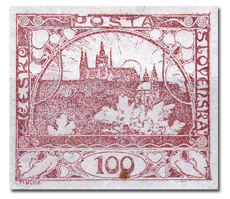
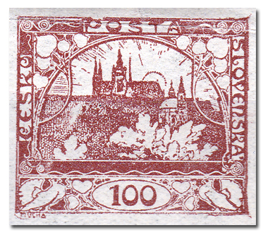
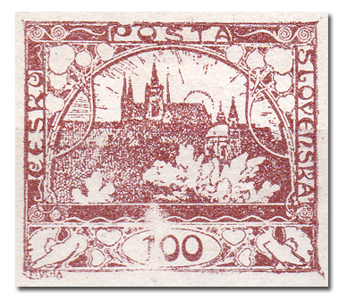
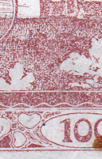
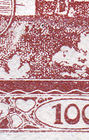
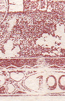
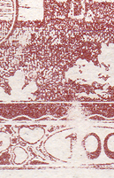

Manchas blancas en 60/2 del valor de 100h
Un velo interesante que la Monografía no menciona se encuentra en la posición 60 de la segunda plancha de impresión del valor de 100h (POFIS n.º 20). Se trata en realidad de la combinación de dos velos – uno está en la cartela del valor y el otro sobre el arbusto. Aparecen sellos sin velo o solo con uno u otro.
En la posición 60/2 aparece también un defecto de plancha monográfico – el marco roto sobre la letra «P» del nombre «POŠTA».



Evolución de este defecto de fabricación:



